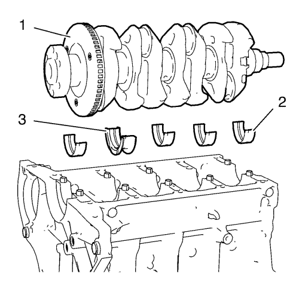
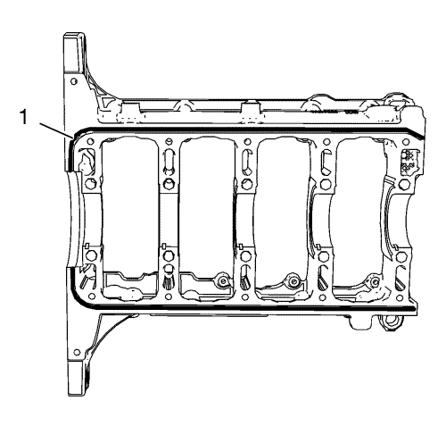
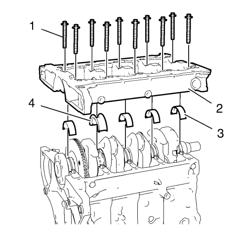
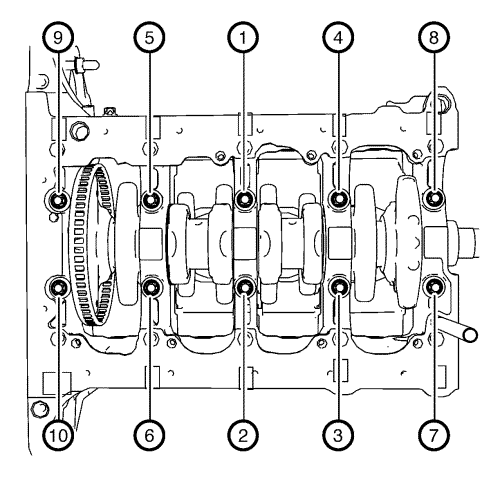
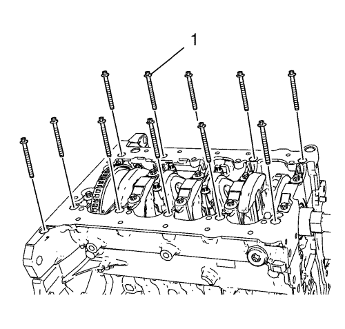
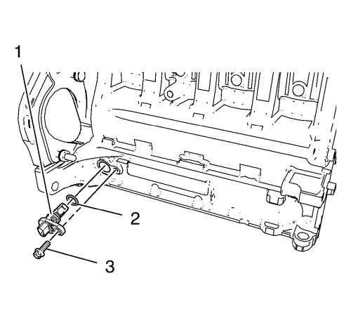
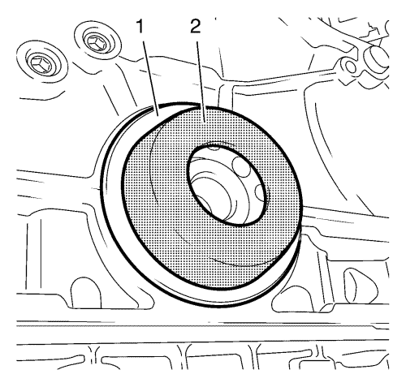
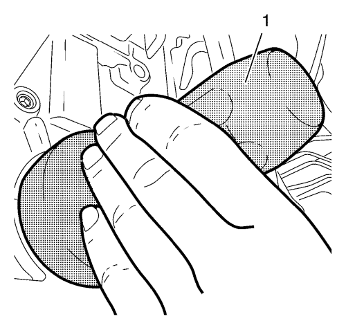

- Lubrique el cigüeñal, los cojinetes del cigüeñal, y la placa de sujeción del sombrerete de cojinete del cigüeñal con aceite de motor.

- Monte los 4 cojinetes superiores del cigüeñal (2) y el cojinete de empuje del cigüeñal (3).
- Monte el cigüeñal (1).

Nota: La capa de masilla sellante debe tener un grosor de 2 mm (0,0787 pulg.).
- Aplique masilla sellante (1) al borde exterior de la ranura de la placa de sujeción del sombrerete de cojinete del cigüeñal Consultar Adhesivos, líquidos, lubricantes y selladores .

Nota: El procedimiento de instalación completo no debe tomar más de 10 minutos.
- Monte los 4 cojinetes inferiores del cigüeñal (3) y el cojinete de empuje inferior del cigüeñal (4).
- Monte los tornillos de la placa de sujeción del sombrerete de cojinete del cigüeñal (2).
Nota: NO reutilice los tornillos viejos.
- Monte los 10 tornillos interiores NUEVOS de la placa de sujeción del sombrerete de cojinete del cigüeñal (1).
Precaución:Consulte Precaución con las fijaciones en la sección Prólogo.
Precaución:Consulte Precaución de la fijación del par angular y estiramiento en la sección Prólogo.

- Apriete los 10 pernos interiores de la placa de sujeción del sombrerete de cojinete del cigüeñal en el orden indicado y cumpliendo las siguientes especificaciones:
| 8.1. | Apriete los tornillos interiores de la placa de sujeción del sombrerete de cojinete del cigüeñal a 25 N·m (18 lib. pie). |
| 8.2. | Apriete los pernos interiores de la placa de sujeción del sombrerete de cojinete del cigüeñal otros 60°. Utilice la llave EN-470-B. |
| 8.3. | Apriete los pernos interiores de la placa de sujeción del sombrerete de cojinete del cigüeñal otros 15°. Utilice la llave EN-470-B. |

Nota: NO reutilice los tornillos viejos.
- Monte los 12 pernos exteriores NUEVOS de la placa de sujeción del sombrerete de cojinete del cigüeñal (1) y apriételos según las siguientes especificaciones:
| 9.1. | Apriete los tornillos exteriores de la placa de sujeción del sombrerete de cojinete del cigüeñal a 10 N·m (89 lib. pulg.). |
| 9.2. | Apriete los pernos exteriores de la placa de sujeción del sombrerete de cojinete del cigüeñal otros 60°. Utilice la llave EN-470-B. |
| 9.3. | Apriete los pernos exteriores de la placa de sujeción del sombrerete de cojinete del cigüeñal otros 15°. Utilice la llave EN-470-B. |

- Monte el sensor de posición del cigüeñal (1) y un anillo de junta NUEVO del sensor (2).
- Monte el tornillo del sensor de posición del cigüeñal (3) y apriételo a 8 N·m (71 lib. pulg.).

Nota: Lubrique el retén de aceite trasero del cigüeñal.
- Monte el retén de aceite trasero del cigüeñal (1) con la herramienta de montaje EN-235-6 (2).

- Con la herramienta de montaje EN-658-1 (1), golpee el retén de aceite trasero del cigüeñal.